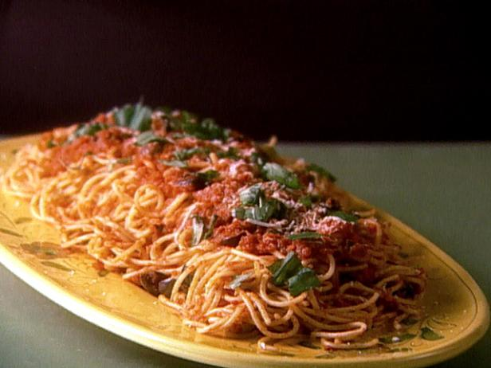

Ryans Famous Spaghetti Receipe

Description
This is the famous dish by non other than Ryan Kreps. A healthy choice for
all healthy food lovers that also love carbs :)
Serves 8 to 10 people
Ingredients
- 1 package of Whole Wheat Spaghetti noodles
- 1 pound of ground deer meat (or meat of your choice)
- 15 Kalamata olives
- 1 can of Marinara Sauce
- 1 TBS Himylayan Salt
- 1 TBS Pepper
- 1/2 TBS Cyanne Pepper
Steps
- Cook Deer meat over stove at medium heat. Once cooked add salt, pepper, and Cyanne pepper
- Add Marinara and Kalamata olives to meat in pan. Turn pan to low heat and add lid
- Boil Water to rolling boil and add appropriate amount of spaghetti. Do not break spaghetti in half. VERY IMPORTANT
- Add Spaghetti to meat sauce, stir and let sit for an additional 10 minutes to marinate.
- Put that shit in your stomach